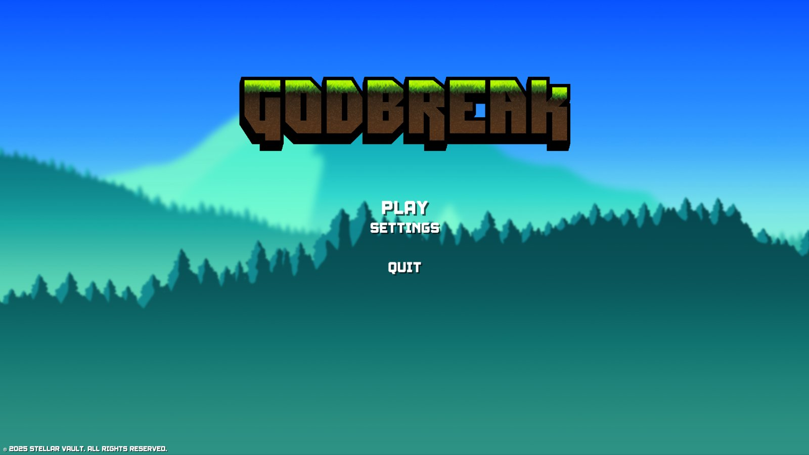
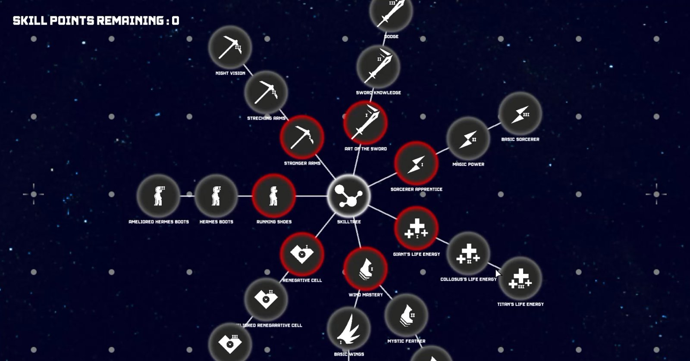
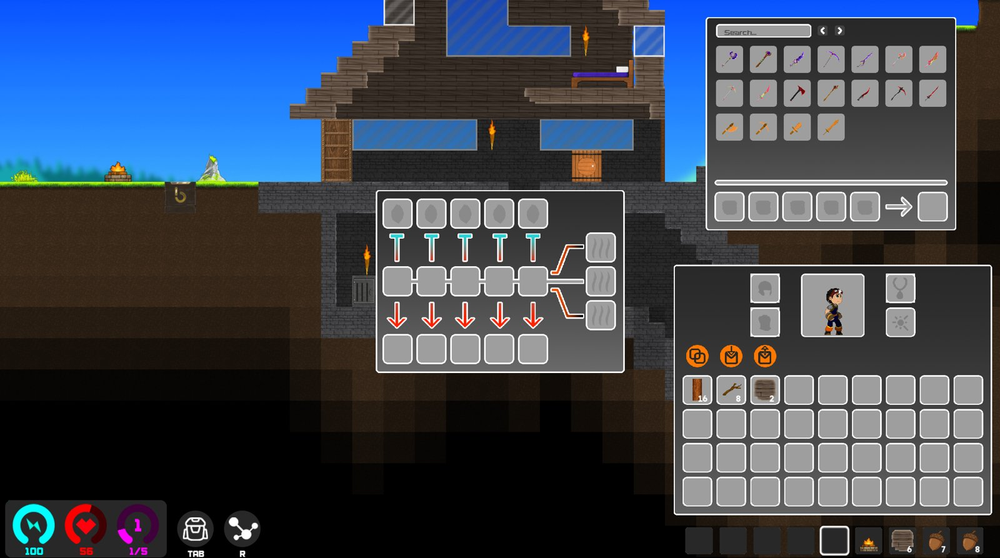

Un jeu bac à sable développé en C++ avec SFML.
Hébergé sur le site de Créajeux. Décompresse l’archive, puis lance l’exécutable.

J’ai développé l’arbre de compétences et son implémentation en jeu, ainsi que plusieurs éléments de gameplay, comme le four.
Un arbre de compétences est un ensemble de nœuds reliés par des prérequis : une compétence ne se débloque que si celles qui la précèdent le sont. Le travail couvre la structure de ces données et leur branchement dans le jeu, pour que les compétences débloquées aient un effet réel sur le gameplay.

Parmi les systèmes de gameplay que j’ai développés, il y a le four, avec son interface de craft : des emplacements en entrée et en sortie reliés par des flèches, intégrés à l’inventaire du joueur.

SFML ne fournit pas de moteur de jeu : la boucle de jeu, la gestion des entités et des systèmes sont à écrire soi-même. Ce projet m’a demandé de structurer proprement le code pour ajouter des fonctionnalités sans casser l’existant.